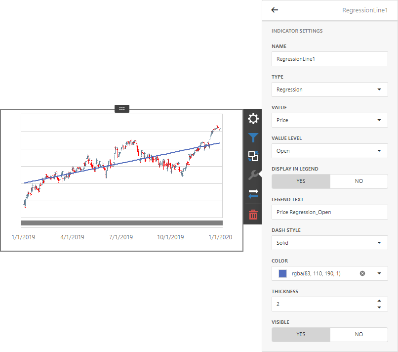
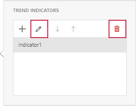

Trend Indicators
The Web Dashboard allows you to display predefined trend indicators in Chart dashboard items.
Trend indicators are statistical tools used to analyze data and identify patterns or relationships between variables.
The following indicator types are available:
Trend Line
Displays the general direction of associated points. It is often used to identify existing data trends and can help forecast future trends.
Regression Line
Visualizes data using a mathematical formula that minimizes the distance between the line itself and associated data points. It is used to model the relationship between two variables and can be used to make predictions about one variable based on the value of another.
Custom Indicator
A custom indicator type registered in a dashboard.
Create a Trend Indicator
Click Trend Indicators in the Options dialog to open the Trend Indicators editor.

Click “+” to add a new trend indicator. The new indicator is generated with the default settings and automatically displayed in a chart dashboard item:

You can change the following indicator settings:
Name
The name of the trend indicator within the indicators collection.
Type
The indicator type: Trend Line, Regression Line, or any registered Custom Type.
Value
The measure data item that is used to calculate the trend indicator.
Value Level
The value that specifies which series point value should be used to calculate the indicator.
Display In Legend
Specifies whether to display the trend indicator in the legend.
Legend Text
The text that identifies the trend indicator within the legend.
Dash Style
The dash style used to paint the line.
Thickness
The thickness of the indicator line.
Color
The color for the trend indicator.
Visible
Specifies whether to display the trend indicator.
In the editor, select an indicator and click Edit or Delete to edit or delete the selected item.
